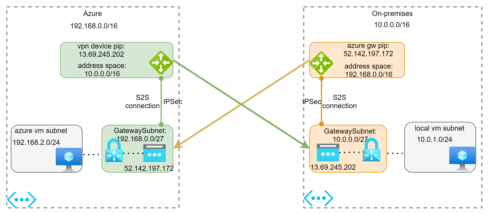
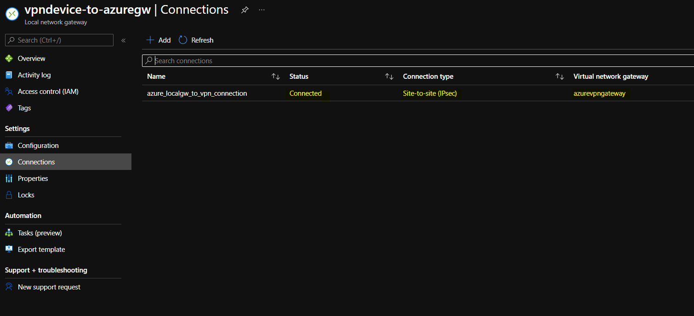
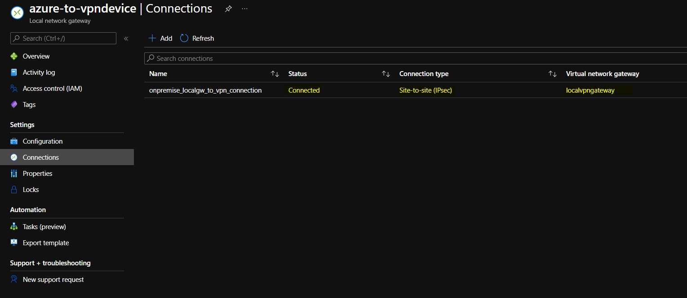
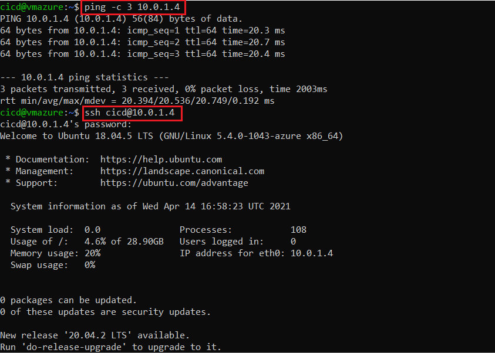
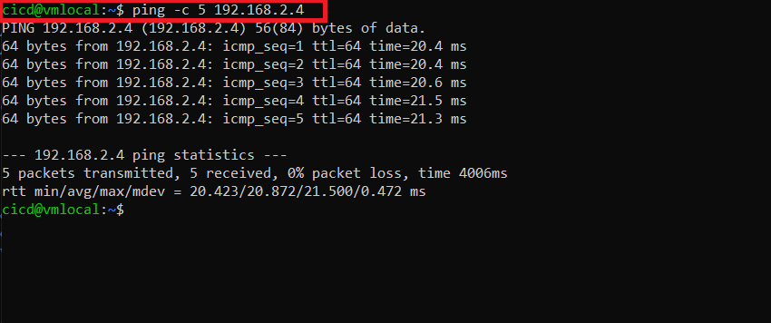
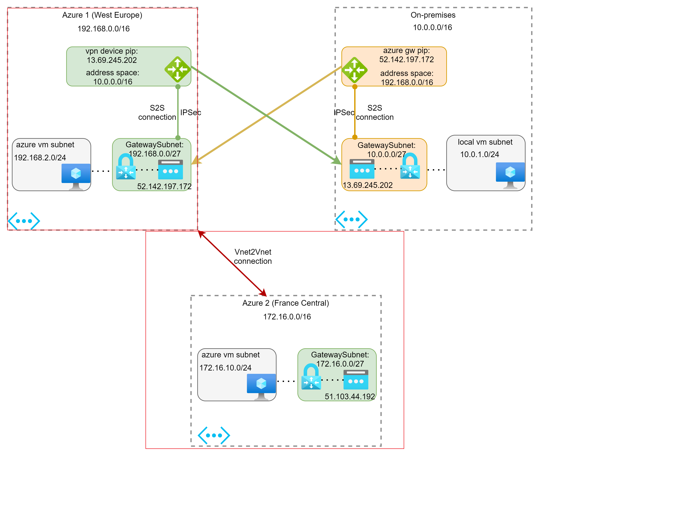
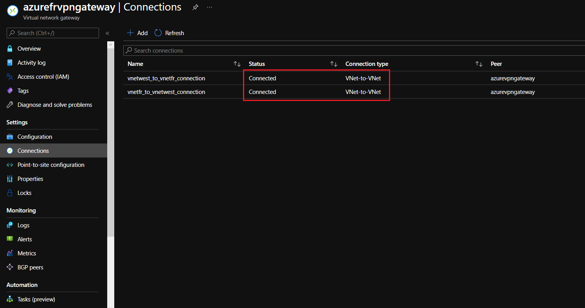
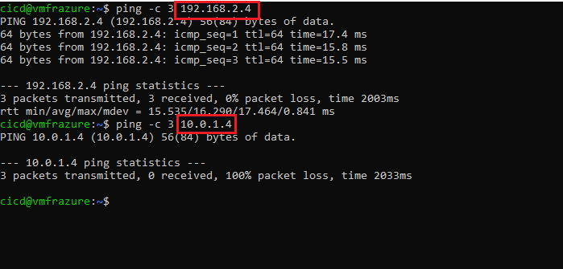

In the previous article (part 1), we talk about the Point-to-Site VPN. It’s great when you want to connect to Azure from your local computer.
In the real world, you may want to connect your entire on-premises networks to Azure or connect multiple virtual networks in Azure together. In this case, you may consider using the Site-to-Site VPN or the Vnet-to-Vnet connection.

Part 3 (S2S VPN with High Availability) available here.
Site-to-Site connection with VPN
S2S (IPsec/IKE VPN tunnel) lets you connect from any of your computers located on your premises to any virtual machine or role instance within your virtual network.
It’s a great option for an always-available cross-premises connection and is well suited for hybrid configurations. This type of connection relies on an IPsec VPN appliance (hardware device or soft appliance), which must be deployed at the edge of your network. To create this type of connection, you must have an externally facing IPv4 address.
Furthermore, you can configure an active/active HA VPN configuration (part 3) if needed.
Here are some characteristics of this type VPN:
| Site to site | |
|---|---|
| Azure supported services | Cloud services and VMs |
| Typical bandwidth | Typically < 1 Gbps aggregate. more |
| Protocols supported | IPsec |
| Routing | PolicyBased (static) and RouteBased |
| Connection resiliency | Active-passive or active-active |
| Use case | Dev, test and small-scale production workloads |
| Pricing | Pricing |
A S2S VPN connection contains:
- From Azure side :
- an azure network gateway with IPSec protocol
- an azure local network gateway that represents your on-premises network and VPN device. This local network gateway will point to the public IP of your VPN device and reference your on-premises network address space
- a S2S connection between azure network gateway and azure local network gateway
- From the on-premises network side :
- your VPN device to establish the actual S2S VPN tunnel with azure network gateway. It will point to the public IP of your azure network gateway and reference your azure network address space.
- you can use this script to configure your VPN device on on-premises network
For testing purposes, we will create another azure virtual network that simulates an on-premises network. This connection works similarly to the real S2S connection from the on-premises network except that we don’t need to have a VPN device installed on this network.
Our schema
Hands-on Labs
Provision the infrastructure:
-
create two virtual networks: a virtual network representing your network in Azure and a virtual network representing your on-premises network
- create azure virtual network:
- create on-premises network:
-
create two local network gateway:
- create two s2s connection with IPSec protocol:
You should see that the VPN connection is well established between your on-premises network and azure network.
- Connection from on-premises to Azure network:

- Connection from Azure to on-premises network:

- create two virtual machines in each network for testing
Test connection
Everything seems good. The VPN connection is already established between two networks. We can make some tests now.
Firstly, I will connect to the Azure network from my local computer using the Point-to-Site VPN (my computer is outside of the on-premises network).
You may check my first article part 1 to know how to configure it.
Now, we can test the connection from this virtual machine in Azure (192.168.2.4) to our machine located in the on-premises network (10.0.1.4).

The connection in revert is also worked.

Well done! Your Site-to-Site VPN is configured correctly.
Site-to-Site connection with Vnet-to-Vnet
If all of your networks are located in Azure, you could consider using Vnet-to-Vnet connection instead of the Site-to-Site VPN connection. It’s is much simpler.
In this connection, Azure creates and manages the local network gateway for you.
It means that if your address space changed for one VNet, the other VNet will update his routes accordingly to reflect these changes.
Here are some characteristics of this type of connection:
- VNet-to-Vnet traffic travels across the Microsoft Azure Backbone, not the Internet
- Vnet-to-Vnet connections works across AAD tenants (and across subscriptions in the same tenant) using Azure VPN Gateways

- vnet2vnet.tf: provision a new virtual network in Azure
- vnet2vnet-connection.tf: provision a Vnet-to-Vnet connection
Now, you can see that your vnet-to-vnet connections are connected to each other.

The communication should be worked between two virtual networks.
However, you cannot reach out to your on-premises network (10.0.0.0/16) from the new virtual network created (172.16.0.0/16). This is because there is no VPN tunnel between them.

Part 3 (Site-to-Site connection with High Availability) available: here
References
- Site-to-Site: https://docs.microsoft.com/en-us/azure/vpn-gateway/tutorial-site-to-site-portal
- VNet-to-Vnet: https://docs.microsoft.com/en-us/azure/vpn-gateway/vpn-gateway-howto-vnet-vnet-resource-manager-portal
- VPN tunnel coexist: https://docs.microsoft.com/en-us/azure/expressroute/expressroute-howto-coexist-resource-manager